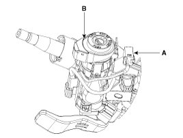
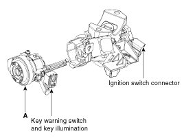
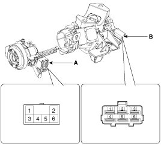
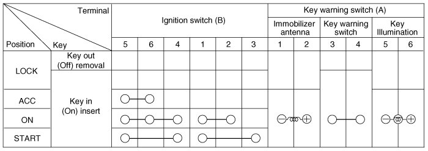

Ignition Switch: Service and Repair
Removal
1. Disconnect the negative (-) battery terminal.
2. Remove the driver crash pad lower panel.
3. Remove the steering column upper and lower shrouds.
4. Remove the wiper switch.
5. Remove the ignition switch after disconnecting the ignition switch 6P connector.
6. Remove the key warning/immobilizer connector (A).

7. After loosening the screw, remove the key warning switch and key Illumination (B).
8. Pushing lock pin with key ACC.
9. Remove the key lock cylinder (A).

Installation
1. Install the key lock cylinder.
2. Install the key warning switch and key Illumination.
3. Install the key warning/immobilizer connector.
4. Connect the ignition switch connector after Install the ignition switch.
5. Install the wiper switch.
6. Install the steering column shrouds.
7. Install the driver crash pad lower panel.
Inspection
1. Disconnect the ignition switch connector (B) and key warning switch connector (A) from the steering column.

2. Check for continuity between the terminals.
3. If continuity is not specified, replace the switch.
